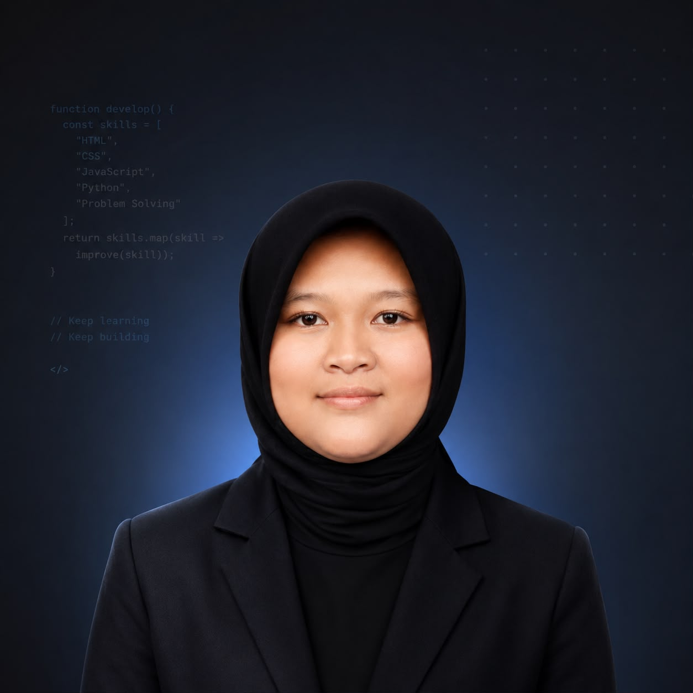

Ketik kata kunci untuk mencari berita

Mahasiswa Prodi Informatika yang tertarik pada Information Retrieval, pengembangan web, dan kecerdasan buatan. Website BeritaCari ini merupakan implementasi search engine berita berbasis algoritma TF-IDF dan Cosine Similarity sebagai tugas mata kuliah Information Retrieval.
BeritaCari adalah search engine berita Indonesia yang mengimplementasikan algoritma TF-IDF (Term Frequency–Inverse Document Frequency) dikombinasikan dengan Cosine Similarity untuk meranking relevansi dokumen berita terhadap query pengguna. Dataset berisi 2085 berita dari 7 kategori berbeda.